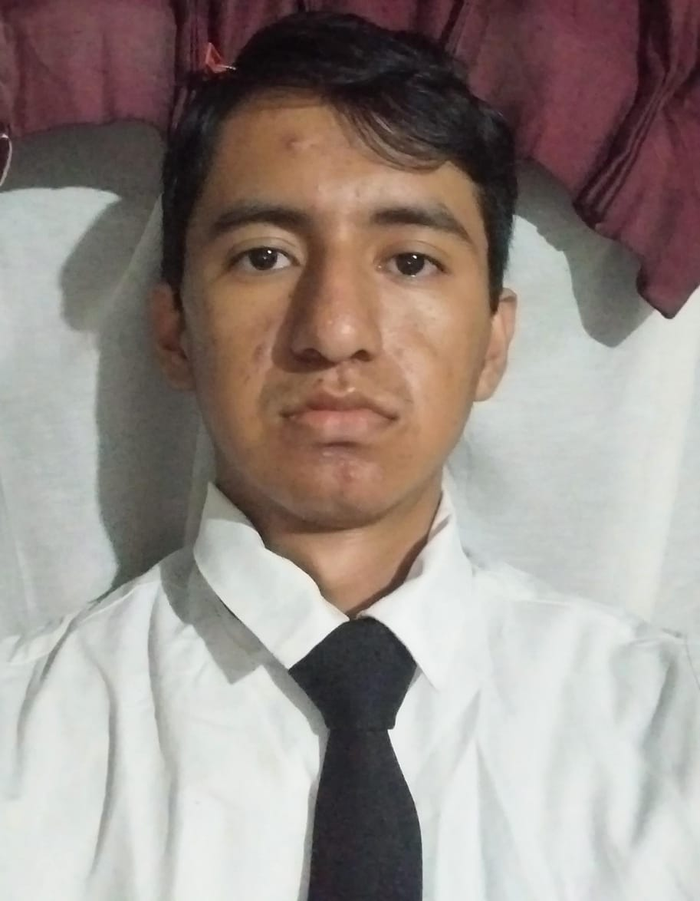
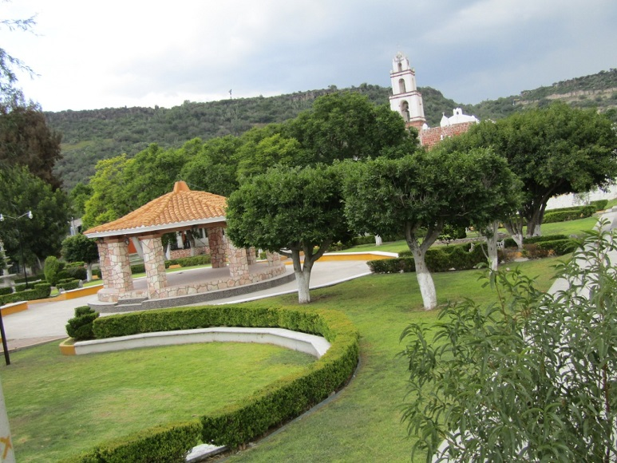

Mi nombre es Daniel López González, nací el 12 de Noviembre del 2004, en el estado de Hidalgo, del municipio de Chilcuautla de la comunidad de tlacotlapilco, soy una persona que se le dificulta hacer varias cosas que requieran actividades físicas ya que soy una persona delgada y algo distraido, mis logros personales de mayor importancia son haber concluido la preparatoria, entrar a la universidad, conseguir nuevas formas de aprender y trabajar, soy una persona fácil de convencer dependiendo la situación en la que me encuentre y también poseo la parte de ser muy sentimental cuando agarro demasiada confianza.
Provengo de la comunidad de tlacotlapilco de la comunidad de Chilcuautla del estado de Hidalgo, es un pueblo donde la mayoría se apoya de unos a otros algunas veces, donde se especializan en el comercio, agricultura, atracción turística de las áreas acuáticas, entre otras cosas mas, la mayor parte del pueblo lo cubren areas verdes, tanto fauna domestica y silvestre, las comidas culinarias son regionales y tradicionales, las fiestas del pueblo son todos los años el dia 10 de agosto, la mayor atraccion turísticason son areas acuaticas donde el origen de sus aguas termales son naturales y se dice entre la poblacion que son aguas curativas para algunos dolores del cuerpo y enfermedades comunes.
Me convencieron unos amigos en estudiar esta carrera, después de tanta incistencia y no tener tanto tiempo en buscar otra universidad, decidi ver de que carreras tenia la universidad y tras ver cuáles son los beneficios al terminar el estudio de las Tics, decidí entrar a esta carrera tanto por los beneficios que se ofrecen y por la situación económica que mayor diariamente paso con mi familia, tambien fue porque quiero demostrarles a mi familia, sobretodo a mis primos mayores que apesar de no poder por estos momentos, que puedo ser mejores que ellos, tambien porque en la preparatoria nos mostraron esta carrera pero no tan aprofundidar y de las maravillas que se pueden hacer con las herramientas mostradas asta el momento.